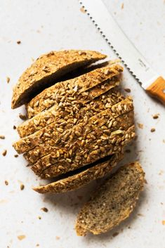

Whole-Grain Bread Recipe
A healthy, hearty bread made with whole-grain flour for a wholesome taste!
Ingredients
- 450g whole-grain flour
- 50g white flour
- 1 packet dry yeast
- 1 teaspoon salt
- 300ml warm water
- 1 tablespoon honey
Instructions
- Combine warm water, yeast, and honey. Let it activate for 5 minutes.
- Mix in flours and salt. Knead until smooth.
- Let the dough rise for 1 hour, then shape it into a loaf.
- Bake for 25-30 minutes at 200°C (390°F).
